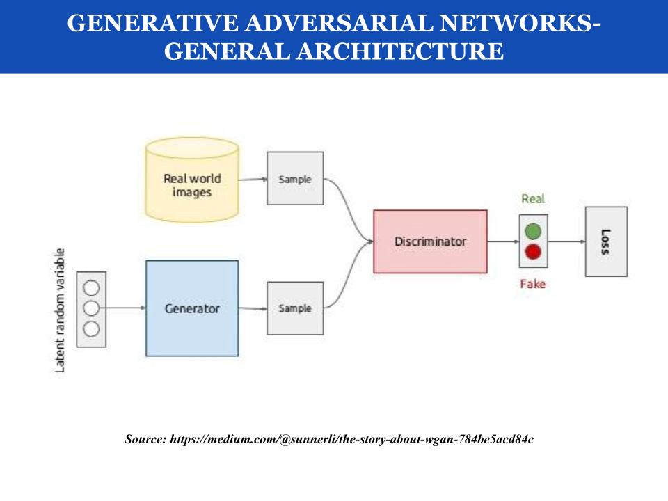

IEEE · journal article · 2015
Analysis of Machine Learning, Deep Learning, and Artificial Neural Network Approaches for Breast Cancer Classification
Sivakumar, E., Anjana Anand, Sachin Sarate
Breast cancer is one of the most common causes of death worldwide among women, with good survival rates if detected early. In our work, we compared supervised, semi- supervised and unsupervised learning on the biomedical dataset, Wisconsin Breast Cancer Dataset, to establish the model with the best performance and hence apply for computer aided diagnosis. The metrics used for the same includes performance of the network as well as the ease of implementation. As a result, we hope to close the gap between technology innovation and its implementation in healthcare.